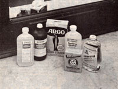

You can avoid the high cost of commercial cosmetics by getting . . .
Is your bathroom cabinet crammed with bottles, tubes, and jars? Do you have any doubts about the safety of some of the ingredients in your personal care products? Are you upset about the increasing cost of such so-called "necessities"? If so, you can probably find a number of safe and inexpensive alternatives right in your household cupboards! The "basic" preparations may not be as attractively (and expensive ly) packaged as are your present toiletries, but they've been demonstrating their usefulness for years and years.
You may be surprised to know, for example, that common cornstarch is a good substitute for talcum or bath powder, and is especially valuable to folks whose skins are sometimes irritated by the perfumes in commercial products. (In fact, a paste made of cornstarch and mineral oil is often used as a soothing mixture for dry skin.) You might also consider trying cornstarch the next time you need a colorless face powder to take the shine off your nose. (Pat on a thin layer, though, or you'll end up looking like a ghost!)
And on those hectic days when your schedule demands that you have a quick, dry shampoo, just sprinkle a generous amount of cornstarch in your hair . . . distribute it evenly . . . let it soak up the dirt and oil for a few minutes . . . and then (vigorously!) brush the white powder out of your clean locks.
It's commonly known that hydrogen peroxide is a fine first aid antiseptic for the treatment of minor cuts and abrasions. Yet few people realize that this product-which can cost five times less than equivalent commercial preparations-can also fill in as a mouthwash and gargle. Simply mix a teaspoonful in a glass of water . . . or see the antiseptic's label for directions.
Rubbing alcohol is also a useful product . . . indeed, many store-bought astringents (also called toners, tonics, or fresheners) are no more than half-and-half mixtures of alcohol and water. It's much less costly, of course, to prepare your own . . . and if you have dry skin, it's an easy matter to increase the proportion of water and thus lessen the solution's drying effect.
Many aftershave lotions are based on astringent formulas, too, so try an alcohol-water blend in place of your usual "bracer". And if you prefer a scented as tringent, just add one teaspoon of extract (vanilla, peppermint, almond, lemon, or what have you) to a pint of rubbing alcohol before diluting the liquid with water.
Witch hazel-an alcoholic solution of an extract from the bark of the witch hazel bush-is another household product that can be diluted with an equal amount of water to make a pleasant astringent, or used full strength as an aftershave.
An application of the lotion will also alleviate the pain of bruises, bites, stings, sunburn, and minor scalds: Splash it on freely . . . cover the area with a soft cloth ... and keep the bandage saturated. A witch hazel rub can ease stiff muscles as well, though several applications may be necessary to bring about the desired results. And, if you happen to be unlucky enough to stray into a patch of poison ivy, just make a paste of witch hazel and baking soda, and spread it on the affected areas for quick relief.
Witch hazel can be a boon to folks with tired eyes, too. Such sufferers can soak cotton pads in the fluid and place them on their closed eyelids while taking a (probably deserved) ten-minute rest.
You can even apply the versatile liquid after you shampoo (for a sweet, clean scent), or use it for a hair- setting aid.
One of the most versatile home cosmetic ingredients is mineral oil . . . or-if that lubricant seems too heavy-you can sub stitute one of the various vegetable oils: cottonseed, corn, olive, wheat germ, soybean, peanut, sesame, safflower, or whatever you like best.
Any of these can be used to replace a number of the oil-based products probably found in your bathroom. Baby oil, for example, is often no more than mineral oil with added scent . . . but you'll pay up to four times more for the leading brand of baby oil than you will for plain mineral oil!
The inexpensive skin softeners can also stand in for costly bath oils. If you pour two or three tablespoonfuls into your tub, the beauty aid will float on top of the water, and coat you with a fine, velvety film. If, however, you'd like the oil and water to mix, simply combine 1/2 teaspoon of very plain, clear shampoo (such as those made for babies) with a quarter-cup of mineral or vegetable oil . . . and pour the mixture under the running tap.
Mineral oil can take the place of your cleansing lotion as well! Just smooth it on with your fingertips ... wipe it off with cotton . . . and follow the application with a splashed-on astringent. It can even be used as a gentle but effective eye makeup remover!
Then, too, many hair tonics and scalp conditioners are no more than combinations of mineral oil, perfume, and color. Therefore, if you have dark hair, you can use plain mineral oil in place of such preparations. (People with blond or gray hair, however, may find that the liquid changes the color of their hair.)
Many thrifty folks also use mineral or vegetable oil to replace expensive hair conditioning treatments. To do so, just rub a small quantity of the natural lotion through your hair . . . keep your head wrapped in a very warm, moist towel for 30 minutes . . . then shampoo thoroughly. (Another good conditioner, one which combines the wellknown benefits of oil and eggs, is mayonnaise. Spoon it directly onto your head . . . rub it in . . . wrap as above . . . and wash!)
You can even soften whiskers by using mineral oil in place of your regular shaving cream! (Water dripping from the razor won't wash the "cream" off, but-if the oily residue bothers you after you've finished-a mild astringent will readily remove it.) Or you can apply a tiny amount to your lips as a combination gloss and moisturizer. (If you'd like to make a lip salve, heat one part beeswax and six parts olive oil .. . pour the mix into a cleaned-out lipstick container . . . and put the tube in the refrigerator to harden.)
One of the oldest uses of mineral oil, as you may know, is as a laxative, but it is no longer recommended for this purpose ... because it's been found to seriously interfere with the body's ability to utilize vitamins.
Baking soda (it's also called bicarbonate of soda) is another kitchen standby that can be utilized in any number of ways!
First, it's a dandy toothpowder, used either plain or mixed half-and-half with salt. (To make such a cleaner easy to dispense, just put a supply in a small, clean salt shaker.) But don't stop there, because soda also makes an effective mouthwash if you stir a teaspoon of the powder into a glass of water and gargle.
And if your area-like so many-is afflicted with hard water, you'll be glad to know that baking soda is a fine substitute for bath salts. Pour two or three teaspoons under the running tap . . . and enjoy!
Baking soda is a fine body deodorant, too! In fact, it's a primary ingredient in several commercially formulated deodorants currently on the market. To use the powder as such, just pour some in a shallow dish and pat it on with a powder puff or piece of cotton.
Or, to prepare a facial mask for oily skin, combine one tablespoon of baking soda with three tablespoons of unprocessed bran (an abrasive). Add just enough water to make a paste, and apply the mixture to your face. Leave it on for 15 minutes, then wash it off . . . using either lukewarm water or a weak astringent.
Some people like to employ baking soda, dissolved in water, as an antacid. Because of its considerable sodium content, however, this remedy should never be used by people with high blood pressure, or by others on a low-salt diet. Prolonged internal consumption of the home medication has also been known to promote kidney stones and worsen bladder infections.
More and more people have, of late, begun to question the wisdom of buying "convenience" . . . particularly in the form of today's highly processed, expensively packaged, and extravagantly promoted foods. And, while feeding your family such things as healthful home-baked bread (instead of the spongy material that goes by that name in supermarkets) is certainly a step in the right direction, don't forget that a little do-it-yourself energy and a few pure ingredients can go a long way toward replacing the overpriced preparations in your medicine chest and on your dressing table, too!
|
 |
|
|